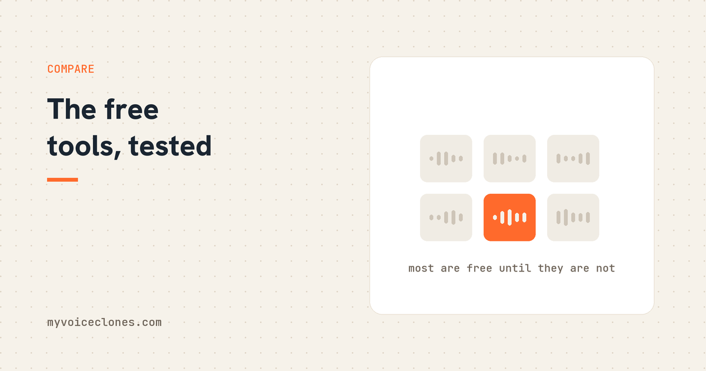

Free voice cloning comes four ways: cloud free tiers (minutes of testing, voice stored on their servers), browser demos (instant but preview quality), raw open source engines like GPT-SoVITS (genuinely free and excellent, but a weekend of setup, and some popular engines ban commercial use), and free tiers of desktop apps like VoiceClone (one voice at full quality, short takes, nothing uploaded).
The question I get more than any other is some version of "what is the best free voice cloner," and I should declare my bias in the first sentence: I sell a voice cloner for money. But I tested the free world exhaustively before and while building it, partly to know what I was up against and partly because I genuinely love free tools, my whole toolkit started free. So this is the map I actually give people, with the traps marked, and you will see that "free" turns out to mean four completely different deals depending on the road.
Road one: cloud free tiers
ElevenLabs and the other cloud tools all offer free tiers, and the deal is consistent: a small monthly allowance of characters, enough for a few minutes of audio, with the serious cloning features sitting behind the paid line. As a way to taste what top cloud quality sounds like, this road is excellent and costs nothing.
As a way to work, it is not meant to be, and that is by design, the free tier is the shop window. The two prints in the fine print worth reading: your voice sample lives on their servers under their terms, which deserves a thought before uploading the most personal biometric you own, and commercial rights on free tiers are restricted, ElevenLabs for example wants attribution and reserves commercial use for paid plans. Taste here, decide elsewhere.
Road two: browser demos
The newest road: voice cloning inside a browser tab, usually running a small model on your own machine's power. Several sites and research demos offer this, free with no account, because your computer does the work instead of a server.
The honest limit is baked into the physics: browsers can only run small models, so this is preview quality, the shape of your voice without the fine grain. As the fastest possible answer to "would my voice even clone well," a browser demo is useful. For published work, it is a taste, not a tool, and you should still check where the audio goes before you record into any tab.
Road three: raw open source engines
Here lives the genuinely free, genuinely excellent answer, with two genuine costs that are not money. The open source world has several strong cloning engines, and the one I rate highest for cloning a single person, GPT-SoVITS, has its own plain words article, clones convincingly from a minute of audio, supports real training, and carries MIT licensed weights, meaning commercial use of what you make is clean.
Cost one is setup and care: Python environments, model checkpoints, research grade interfaces, a weekend to stand up and ongoing fiddling to keep happy. Cost two is the missing safety layers: raw engines hand you one unchecked take per roll of the dice, no flag when a word garbles, no gate stopping a noisy reference from poisoning everything.
And one trap in this road deserves a red circle: not every famous "free" engine is free for real work. Some popular ones ship under licenses that forbid commercial use outright, which people discover after building a workflow on them. Before adopting any engine, read its license and specifically its weights license, five minutes that protect your whole channel or client business.
Road four: free desktop apps
The fourth deal is a full desktop app with a free tier that never expires, which is the shape VoiceClone takes, so judge my bias accordingly. The free version runs the same full engine as the paid one on your own PC, nothing uploaded, and clones AND fully trains one voice, yours, at real quality, with 3 generations to hear it back. Enough to genuinely know how good your clone is before any money moves, with no card and no timer.
The visible catch is the honest one: unlimited length, the word by word checking editor, training, and exports sit behind a $49 one time license, once, not monthly. The free tier exists so the money moves after your ears agree, not before.
Which road is yours
If you want to know today whether your voice clones well, the free VoiceClone app answers with your own trained voice in an afternoon, no account and no upload. If you want top cloud polish for a short one off project, a cloud free tier plus one paid month costs little and ends cleanly, just go in knowing where your voice sample lives. If you tinker happily and evenings are cheaper than dollars, the open source road is real and deeply satisfying, license checked. And if you want your own voice working locally without owning a Python environment, the free app road gets you full quality on one voice, and $49 once opens the rest, which beats the rental math within two months.
The road I would avoid is the one nobody lists as free: drifting from a free tier into a forever subscription for a single voice you could have owned outright.
FAQ
Is there a completely free voice cloning tool?
Yes, two kinds. Browser demos clone instantly at preview quality, and open source engines like GPT-SoVITS are fully free at real quality if you can handle Python setup. Cloud free tiers are free tastes of a paid product.
Can I use free voice cloning commercially?
Check each road. Cloud free tiers mostly restrict commercial use. Open source engines vary wildly, some MIT and clean, some strictly non commercial. VoiceClone's free tier output of your own voice is yours, commercial included.
What is the best free offline voice cloner?
Raw GPT-SoVITS if you enjoy setup, or the free VoiceClone app if you want it working in minutes, both run fully on your own PC with nothing uploaded.
Why is voice cloning software free at all?
Different reasons per road: cloud tiers are marketing, browser demos cost the maker nothing per use, open source is a community gift, and free app tiers let you verify quality before paying once.
Spend zero dollars today, correctly
Pick the road that matches your next hour: a free evening and a love of terminals, clone the engine repository, and for everyone else, download the free app and hear your own voice properly. Whichever you choose, do the license reading before the workflow building, because the only expensive free tool is the one you have to abandon.
Hear your own voice come back.
The free Windows app clones and fully trains one voice, yours, on your own PC. No account, no upload, and the download starts right away.